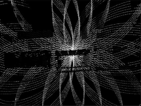
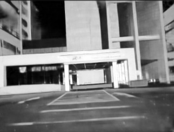
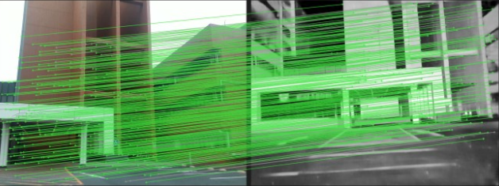

0.45m
ICRA 2027
FREE–LIVO Physically Decoupled Yet Tightly Coupled LiDAR-Inertial-Visual Odometry
LiDAR and camera no longer have to move—or tick—as one. FREE-LIVO links independently moving, unsynchronized sensors through direct cross-modal observations.
Joint estimation
LiDAR + Camera
0.45 m
Mean ATE on M3DGR
Independent sensor motion
0.5s
Delay tested
Minimal accuracy degradation2robots
Moving independently
Trajectories estimated jointly0rig priors
No provided extrinsics
LiDAR–camera pose stays free01 / Abstract
Let the sensors
move freely.
Conventional LIVO assumes that LiDAR, camera, and IMU measurements come from one rigid, accurately synchronized platform. FREE-LIVO removes that assumption.
A pretrained image matcher establishes correspondences between camera images and dense LiDAR intensity images generated from individual scans. The resulting 3D point-to-pixel matches become reprojection factors that directly connect LiDAR and camera poses—even when those poses belong to different timestamps and independently moving sensors.
Those cross-modal factors are optimized together with point-cloud registration, visual tracking, and sensor-specific IMU measurements in one tightly coupled graph. On six M3DGR sequences, FREE-LIVO reaches 0.45 m mean ATE without provided LiDAR–camera extrinsics and remains robust to camera delays of up to 0.5 s.
02 / Method
One graph. Two clocks.
Zero rigid-link assumptions.
FREE-LIVO turns a hard calibration problem into a continuous observation problem: match what both sensors see, then let those matches constrain their poses directly.
Make LiDAR look dense
A Conditional Rectified Flow model completes the sparse intensity projection of one LiDAR scan.
Match across modalities
SuperPoint and LightGlue find image correspondences; available LiDAR depths lift them into 2D–3D matches.
Optimize every constraint
LiDAR, visual, IMU, and cross-modal residuals jointly update both sensor trajectories with fixed-lag smoothing.
Cross-modal matching
From a sparse scan
to shared visual structure.
Completion exposes edges and corners that a pretrained feature matcher can recognize in both LiDAR intensity and RGB—without training on large paired LiDAR–camera datasets.



New constraint
LiDAR–camera reprojection factor
Each matched 3D LiDAR point is projected into its corresponding camera frame. Its pixel residual constrains both poses directly, regardless of timestamp.
Tight coupling
A factor graph that bridges trajectories
Red cross-modal factors connect independent LiDAR and camera state sequences alongside their geometric, visual, and inertial constraints.
03 / Results
Robust when timing isn't.
Because a reprojection factor links the actual poses behind each match, a camera observation does not need to share the LiDAR scan's timestamp.
Time-offset stress test
+0.3 s and still aligned.
Rigid-rig baselines blur color across object boundaries under camera delay. FREE-LIVO preserves the alignment of image color and LiDAR geometry because its cross-modal factors do not assume simultaneous capture.
LiDAR trajectory
Camera trajectory
Cross-modal factor
M3DGR benchmark
Accurate without supplied LiDAR–camera extrinsics.
FREE-LIVO averages 0.45 m ATE across six indoor and outdoor sequences, compared with 0.71 m for its underlying LiDAR odometry module alone.
Translational ATE RMSE after SE(3) alignment. Lower is better.
04 / Decoupled experiments
Different hands.
Different robots. One map.
We push physical decoupling beyond calibration error: the LiDAR and camera follow genuinely different trajectories.
A
Handheld sensors
LiDAR in one hand, camera in the other.
In indoor and outdoor scenes, FREE-LIVO jointly estimates both trajectories and produces consistently colored point clouds while the relative sensor pose changes continuously.
B
Multi-robot setup
A rover and a legged robot, moving independently.
The LiDAR rides on the rover while the camera rides on the quadruped. FREE-LIVO runs online and recovers both paths in a shared world frame despite different motions and vibration patterns.
ICRA 2027
Physically free.
Algorithmically connected.
Robust sensor fusion without a fixed LiDAR–camera rig or strict time synchronization.